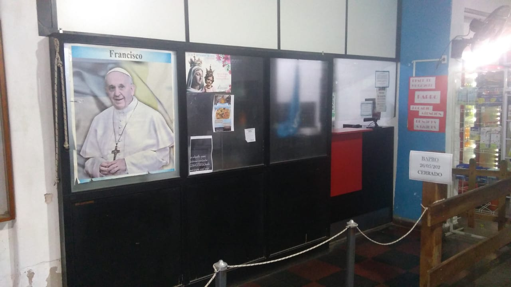

27/05/2023
Refacciones y mejoras en la Escuela de Educación Superior Técnica N° 5 de La Emilia

TECNICA 5. La EEST N°5 de La Emilia se encuentra realizando refacciones y mejoras edilicias en la institución con el fin de brindar cada día mejores espacios de trabajo y de formación para toda la comunidad educativa. D ichas reformas se encuentran enmarcadas en un proyecto institucional que busca mejorar las condiciones edilicias del establecimiento educativo.
Dicho proyecto se viene realizando en diferentes etapas mediante las cuales en la nave del taller han realizado el re-pintado de las sendas de seguridad con la ayuda de la Cooperativa de Agua potable de La Emilia quien les dono la pintura. “Los profesores se pusieron la tarea al hombro” –Aseguró Juan Carlos Borras- director del establecimiento. “Por otro lado con una gran mano que nos dio la Cooperativa Eléctrica hemos renovado por completo la instalación eléctrica de una de las alas de la escuela donde los profesores de Taller fueron quienes con gran esfuerzo lo llevaron a delante.” -Agrego Borras- “Para finalizar hemos renovado por completo el área de soldadura con un gran esfuerzo de nuestra Cooperadora Escolar. -Concluyo-
26/05/2023
Pusieron en marcha las bombas de desagote en la planta de bombeo

FODIEM.El encargado de la planta de bombeo de La Emilia, Miguel Ángel Ponzanesi, en conjunto con los operarios de la planta, pusieron en marcha las bombas de desagote como método de prueba y mantenimiento de las mismas.
Aprovechando el caudal de agua que se logró juntar en el reservorio luego de una considerable cantidad de lluvia caída en
estos últimos días, el encargado de la planta de bombeo aprovecho para probar y realizar el mantenimiento correspondiente
de las bombas de agua.
“El miércoles que comenzó la lluvia, cerramos las compuertas para poder juntar agua y hacer el mantenimiento
correspondiente de las bombas” –comento Miguel Ángel Ponzanesi-.
Según los datos recogidos a través del pluviómetro ubicado en la planta de bombeo ,el registro de lluvia caída durante
los días 24, 25 y 26 de mayo fue de un total de 48 mm, número que brindo la posibilidad de realizar las pruebas p
ertinentes para el mantenimiento de las bombas. Recordemos que durante el mes de mayo el agua caída en La Emilia fue de
127,5 mm.
26/05/2023
Té con entretenimientos en el Sum del Jardín 904 de La Emilia

JARDÍN 904.El sábado 10 de Junio a las 15:00 hs se realizará en el Sum del Jardín 904 de La Emilia un té con entretenimientos organizado por la Asociación cooperadora del Jardín.
La Asociación cooperadora invita a la población a compartir una tarde de té con diversión y sorpresas, se solicita además a los asistentes llevar taza, equipo de mate, lapicera y por supuesto muchas ganas de divertirse. El costo de la entrada es de $500
26/05/2023
Villa Constitución se consagró campeón del torneo de “Mamis Voley” en La Emilia
CSYDLE.En el día de ayer, se llevó cabo en las instalaciones del Club Social y Deportivo La Emilia, un torneo de “mamis Voley” del que participaron junto a dos equipos emilianos 6 equipos más provenientes de localidades vecinas. El equipo de Villa Constitución fue quien se consagró campeón del torneo.
El jueves 25 de mayo desde las 9:30 hs se desarrolló en el gimnasio del Club Social y Deportivo La Emilia un torneo de
“mamis vóley” que convocó a diferentes equipos de la zona. Entre ellos participaron equipos de Rojo, V
illa Constitución, Sánchez, Pérez Millán, San Nicolás y La Emilia que presentó dos equipos.
La final del torneo fue disputada entre Pérez Millán y Villa Constitución, consagrándose este último campeón de dicho
torneo.
26/05/2023
Acto del 25 de mayo en el Jardín 904 de La Emilia
JARDIN 904.El miércoles 24 de mayo se realizó en el sum del Jardín de Infantes 904 de La Emilia el acto por la celebración del 213 aniversario de la formación de nuestro primer gobierno patrio. Primero se llevó a cabo el acto formal y luego se realizaron juegos tradicionales de la época de 1810 con las familias.
25/05/2023
Torneo de "Mamis voley" en el Club Social y Deportivo La Emilia
CSYDLE. Este jueves 25 de mayo se llevará cabo en las instalaciones del Club Social y Deportivo La Emilia, un torneo de vóley en el que participará el equipo de “mamis Voley” de La Emilia junto a otros 6 equipos provenientes de diferentes localidades vecinas.
El jueves 25 de mayo desde las 9:30 hs se desarrollará en el gimnasio del Club Social y Deportivo La Emilia el torneo de “mamis vóley” que convoca a diferentes equipos de la zona. Entre ellos participarán equipos de Rojo, Villa Constitución, Sánchez, Pérez Millán, San Nicolás y La Emilia que presentará dos equipos.
24/05/2023
Festejos del 25 de mayo en La Emilia suspendidos

DELEGACION MUNICIPAL. Debido al mal clima pronosticado para el 25 de mayo se ha decidido SUSPENDER las actividades previstas en la nuestra localidad con motivo de celebrarse un nuevo aniversario de la Revolución de mayo.
El jueves 25 de mayo la municipalidad de San Nicolás tenía previsto realizar el tradicional acto para conmemorar un
nuevo aniversario de la Revolución de mayo, en la Localidad de la Emilia, pero a causa de las malas condiciones
climáticas se tomó la decisión de suspender el acto.
Recordemos que las actividades iban a comenzar con la celebración del Tedeum en el Santuario Jesús Misericordioso para
luego continuar con el tradicional desfile y cerrar con la entrega de chocolate caliente a los presentes en la
plaza, pero el clima no acompaño y las actividades debieron ser suspendidas.
22/05/2023
Informe del estado del terraplén

FODIEM. A lo largo de la semana pasada, el encargado de mantenimiento de la Planta de bombeo Miguel Ángel Ponzanesi, junto con el Tesorero de la Asociación Civil Fodiem, Sergio Piazza, estuvieron recorriendo el terraplén, tomando imágenes de video y fotográficas con el fin de brindar un informe al Director General de la Dirección Provincial de Hidráulica, que documente el estado actual del terraplén.
El informe enviado en ésta ocasión tiene fecha del día 18 de mayo del 2023 y hace referencia a algunas grietas
que presenta actualmente el terraplén y desgaste de algunas zonas a causa del paso de animales, solicitando la
reparación del mismo. “Recordamos que ya se han enviado otros informes por el mismo motivo”- sostuvo Ponzanesi.
Este pedido se hizo extensivo además al Sr Intendente municipal, contador Manuel Pasaglia.
16/05/2023
Comenzaron las pasantias de los alumnos de la Escuela Técnica Nro 5

TECNICA 5. Durante los primeros días del mes de mayo, dieron comienzo las pasantías que realizan los alumnos de 7° año de la Escuela Técnica Nro 5 de nuestra localidad. Dichas pasantías se realizan en diferentes establecimientos laborales del partido de San Nicolás y Ramallo.
El 4 de marzo comenzaron a desarrollarse las pasantías de los alumnos de 7° año, de la Escuela Técnica Nro 5 en
diferentes establecimientos laborales de los partidos de San Nicolás. Algunas de las entidades que ofrecen
sus espacios para dicho fin son: Leval SA, Municipalidad de San Nicolás de los Arroyos, Servicio informático del
Hospital San Felipe, Asociación Civil Fodiem, Eco print, entre otras.
“Empezamos con una charla formal, fortaleciendo compromiso, responsabilidad y desarrollo de habilidades en el trabajo”
-Sostuvo el profesor Diego Castiglioni, encargado de coordinar dichas prácticas-. “Esto nos permite proyectar en los
alumnos el valor que esto representa y darles a conocer el entorno laboral Real, así como también, contar con más
experiencias y recomendaciones para tener un perfil profesional competitivo” -agregó-
22/05/2023
Pago de impuestos en BAPRO

AMUCOOB. La Asociación Mutual Amucob informa que por el momento el servicio de Bapro ubicado en las instalaciones de la cooperativa, solo tendrá habilitado hasta nuevo aviso, el cobro para los siguientes impuestos: ARBA, AFIP Y RENAPER.
Para realizar pagos de sellados, multas y licencias de conducir pueden dirigirse a la sucursal del Banco Provincia
más cercano.
Por su parte, informan que se sigue trabajando para restituir a la brevedad el funcionamiento habitual de
PROVINCIA NET PAGOS.
16/05/2023
Reparación y renovación del sistema de alerta temprana en el Arroyo del Medio

FODIEM. Durante esta semana, se llevaron a cabo reparaciones y renovación de sensores del sistema de alerta temprana, del arroyo del medio. Estos sensores permiten monitorear los niveles de lluvia, del arroyo y avisar en caso de una crecida.
Las estaciones meteorológicas se encuentran ubicadas en los puentes de Peyrano, Guerrico, Figueredo y La Emilia
y son las encargadas de medir la altura del Arroyo del medio con el fin de brindar información continua y precisa
del caudal de la cuenca del mismo.
El principal beneficio de un sistema de alerta temprana radica en la información que brinda y especialmente el
momento que la provee. La misma puede ser utilizada para predecir cuándo se producirá y qué tan grave será una
contingencia. A su vez, el sistema permite dar aviso con antelación para que los integrantes de la comunidad puedan
protegerse a sí mismos, a sus pertenencias y tomar acciones preventivas.
16/05/2023
Alumnos de la EP 18 salieron campeones de la etapa local en la actividad voley de los Juegos Escolares Bonaerenses
EP 18. Alumnos de 6to año de la Escuela Primaria Nro 18 de La Emilia salieron campeones en la disciplina vóley de los "Juegos escolares Bonaerenses. JEBO 2023" y clasificaron para la etapa regional que se realizará en la localidad de Ramallo.
Durante el mes de mayo se están llevando a cabo en la ciudad de San Nicolás los "Juegos escolares Bonaerenses. JEBO 2023",
con la participación de alumnos de 6° año de las escuelas primarias, tanto de gestión estatal como privada.
Alumnos de en la Escuela Primaria N°18 de la Emilia están participando en diferentes disciplinas y ya salieron campeones
en voley, clasificando de ésta manera para la etapa regional que se realizará en Ramallo en donde se dará un pase para
Mar del Plata.
De esta edición de los juegos participan un total de 200 chicos de 22 establecimientos de la zona, siendo ésta la
primera vez que alumnos de la Escuela Nro 18 compiten en dicho torneo.
15/05/2023
Nuevo horario de atención en el Registro Civil de La Emilia

REGISTRO CIVIL. El registro Civil de La Emilia anunció su nuevo horario de atención al público para nuestra localidad. Actualmente las puertas se encuentran abiertas de lunes a viernes de 8 a 13 hs. y se realizan todos los trámites que se hacen en el Registro Nacional de las personas.
“Hoy por hoy estamos en condiciones de realizar en el Registro Civil de la Emilia todos los trámites que se hacen en
ésta institución” -comentó Rosana Pérez encargada de atención al público - “Hacemos tramites de DNI, matrimonios,
certificado de defunción, denuncias de extravió y renovación, declaración jurada de domicilio, hacemos también el
certificado de supervivencia para adultos mayores, pasaporte, etc. Las denuncia de extravió de cedula y carnet de
conducir por ejemplo, , ya no se hace más en la policía, ahora se hace en el Registro Civil y todos los trámites se
atienden sin turno y por orden de llegada”
El trámite de actualización del DNI debe hacerse la primera entre los 5 y 8
años de edad y la segunda cuando cumplen 14 años. Para la primera actualización no es necesario que los niños y niñas
concurran con los padres, pero si deben estar acompañados por un adulto, en el caso de los jóvenes de 14 años ya pueden
concurrir solos para hacer la renovación. El trámite tiene un costo de $300 y solo deben traer el DNI
08/05/2023
Tranquera abierta en "Cosquin abuelazo"

TRANQUERA ABIERTA. EL grupo de Danzas tradicionales "Tranquera abierta" participó por segundo año consecutivo del mega festival de folclore "COSQUIN ABUELAZO". Dicho evento se llevó a cabo del 5 al 8 de mayo, en la localidad de Cosquín. En esta ocasión, Tranquera abierta estuvo representada por los bailarines María Luján Caffiero y Miguel Ángel Ponzanesi quienes fueron destacados con una mención a la propuesta escénica luego de haber realizado dos presentaciones.
Para la presentación inicial, realizada el sábado 6 de mayo por
la tarde, “Tranquera abierta eligió un cuadro norteño en el que bailaron un gato escondido, la zamba
alegre y una chacarera larga. Luego, el mismo sábado pero en el horario nocturno realizaron
su segunda presentación representada por un cuadro sureño, en el que bailaron una huella antigua,
danza folclórica argentina, nacida entre 1810 y 1820, característica de la llamada música surera o
sureña y la zamba pasto verde.
Finalmente, el día domingo se realizó la premiación de ésta
Segunda Edición festival "COSQUIN ABUELAZOO" y el grupo de danzas “Tranquera abierta” recibió una
mención a la propuesta escénica.
Tranquera abierta en Cosquin abuelazo segunda parte. Ver video
08/05/2023
Actividades del club 1° de mayo

CLUB 1° DE MAYO.El club 1° de mayo sumo nuevos talleres que se dictan en sus instalaciones de calle de Emilio Córdova esquina Alberto González. Durante la semana se dictan talleres destinados a niños y adultos de folclore y de gimnasia artística.
Si bien la actividad principal desde hace muchos años para el
club 1° de mayo han sido la bochas, deporte que les ha dado
innumerables satisfacciones poniendo al club en los puestos
más altos, también han apostado a sumar diferentes
actividades sociales y culturales.
Se han realizado eventos, espectáculos y diferentes talleres
destinados a la comunidad Emiliana. Actualmente y desde hace
ya algunos años, se encuentra desarrollando su actividad el
taller de danzas folclóricas a cargo del profesor Omar Paez
que se dicta los días lunes y jueves de 21:30 a 22:30 hs.
Por otro lado, los días martes y viernes se está
desarrollando el taller de gimnasia artística orientado a
niños y adolescentes. A las 17:00 hs niños de 3 a 5 años, a
las 18:00 hs alumnos de 6 a 13 años y a las 19:30 hs de 13
años en adelante.